Null values for each variable
| Number of null values | |
|---|---|
| Date | 0 |
| ltd | 0 |
| hvi | 0 |
| sales | 0 |
| int_rate | 0 |
| lending | 193 |
Null values for each variable
| Number of null values | |
|---|---|
| Date | 0 |
| ltd | 0 |
| hvi | 0 |
| sales | 0 |
| int_rate | 0 |
| lending | 193 |
There are 193 missing values in lending variable. This is because the ABS value of new lending finance in Victoria only available from 2002. It also has one-month reporting lag. Therefore, no missing values handling required.
However, when fitting model incorporating with lending, missing values may need to be omitted.
Date ltd hvi sales int_rate lending
1 POSIXct numeric numeric numeric numeric numericAll variables are already in appropriate format, and thus no further action required.
Null values for each variable
| Number of null values | |
|---|---|
| dd | 0 |
| ltd_total | 0 |
| ltd_res | 0 |
| ltd_nonres | 0 |
| ltd_comm | 0 |
| ltd_ind | 0 |
| ltd_other | 0 |
| ltd_unknown | 0 |
| volume_total | 0 |
| volume_res | 0 |
| volume_nonres | 0 |
| volume_comm | 0 |
| volume_ind | 0 |
| volume_other | 0 |
| volume_unknown | 0 |
There are no missing values in this dataset.
dd ltd_total ltd_res ltd_nonres ltd_comm ltd_ind ltd_other ltd_unknown
1 POSIXct numeric numeric numeric numeric numeric numeric numeric
volume_total volume_res volume_nonres volume_comm volume_ind volume_other
1 numeric numeric numeric numeric numeric numeric
volume_unknown
1 numericAll variables are already in appropriate format, and thus no further action required.
Summary statistics of ltd aggregate data features
| Min | Quartile_1 | Median | Mean | Quartile_3 | Max | |
|---|---|---|---|---|---|---|
| ltd | 28079889 | 67219566 | 208486293 | 264719200 | 393845322 | 1036043316 |
| hvi | 22.45 | 33.43 | 71.14 | 84.06 | 118.00 | 192.41 |
| sales | 3553 | 6078 | 7910 | 7900 | 9332 | 15177 |
| int_rate | 4.520 | 5.930 | 7.310 | 8.256 | 9.360 | 17.000 |
| lending | 2173 | 3360 | 4489 | 4838 | 5799 | 10594 |
Based on the summary statistics, these are some insights:
Figure 1 shows that there are a few outliers for ltd at around 1 billion.
Figure 2 shows that there are no outlier for hvi variable.
Figure 3 shows that there are 2 outliers for sales variable.
Figure 4 shows that there are multiple interest outliers at the rate ranged from 15% to 17%.

Figure 5 shows that there are a few lending outliers at around $10 billions
`stat_bin()` using `bins = 30`. Pick better value with `binwidth`.As indicated by Figure 6, mostly values lie on the right end, which means ltd is right-skewed. Moreover, values for ltd can be separated to different clusters (at $250m, $500m, etc).
`stat_bin()` using `bins = 30`. Pick better value with `binwidth`.Similarly, Figure 7 indicates there are clusters formed by hvi value.
`stat_bin()` using `bins = 30`. Pick better value with `binwidth`.Figure 8 shows that the distribution for sales are fairly symmetrical around 9000, with a few outliers at 15000.
`stat_bin()` using `bins = 30`. Pick better value with `binwidth`.Figure 9 shows that the distribution for intert rate does not follow any clear pattern, but mostly clustered on 2 ends.
`stat_bin()` using `bins = 30`. Pick better value with `binwidth`.Similarly, as indicated by Figure 10, we can also see some clusters.
We can see most distributions include clusters, which indicates multimodal distributions. A distribution with multiple peaks (or clusters) is referred to as multimodal.
This could due to a few reasons:
Different Subpopulations: The presence of distinct groups within the dataset. For example, as we are looking at property data, different clusters could represent different types of property (e.g., residential, non-residential) each with its own typical value range for variables like price or size.
Seasonal Variations: Different clusters may reflect seasonal effects. For example, sales data might show peaks during certain times of the year due to holidays or seasonal buying patterns.
Economic Phases: Variables like interest rates or lending volumes might cluster around different values due to economic cycles, such as expansion, recession, or recovery phases, reflecting periods of tightening or loosening credit conditions.
We expect to see similar pattern for ltd unit data (ltd_unit).
Summary statistics of ltd unit data features
| Min | Quartile_1 | Median | Mean | Quartile_3 | Max | |
|---|---|---|---|---|---|---|
| ltd_total | 286162171 | 436746679 | 507020072 | 546341854 | 653755886 | 1013171645 |
| ltd_res | 238100812 | 346973388 | 413683222 | 436669910 | 500825836 | 761393438 |
| ltd_nonres | 42909678 | 77139548 | 98168249 | 109671944 | 137012692 | 357222264 |
| ltd_comm | 22106375 | 42163845 | 55109452 | 59537163 | 70582867 | 132405000 |
| ltd_ind | 5229382 | 17133801 | 25140324 | 31597623 | 38290916 | 214372653 |
| ltd_other | 3325394 | 9529304 | 15149780 | 18436842 | 24369369 | 74469171 |
| ltd_unknown | 0 | 0 | 0 | 100317 | 12670 | 8585500 |
| volume_total | 11696 | 16224 | 17552 | 17765 | 19052 | 28295 |
| volume_res | 10899 | 15151 | 16367 | 16559 | 17748 | 26137 |
| volume_nonres | 758 | 1047 | 1204 | 1206 | 1336 | 2158 |
| volume_comm | 230.0 | 362.8 | 429.0 | 435.7 | 494.5 | 771.0 |
| volume_ind | 130.0 | 238.2 | 307.0 | 310.3 | 367.5 | 565.0 |
| volume_other | 289.0 | 401.5 | 443.5 | 458.5 | 506.2 | 835.0 |
| volume_unknown | 0.000 | 0.000 | 0.000 | 1.303 | 1.000 | 28.000 |
Based on the summary statistics, these are some insights:
The summary statistics for the LTD unit records reveal insights about the distribution and characteristics of loan to deposit (LTD) across different sectors (residential, non-residential, commercial, industrial, other, and unknown) as well as the volume of transactions in these sectors. Here’s an analysis based on the provided summary:
Market Focus: The data underscores the banking sector’s focus on residential lending, likely driven by the consistent demand for housing and residential properties. This could also reflect broader economic trends, such as population growth or urbanization.
Economic Contributions: The contributions of commercial and industrial sectors to the LTD and transaction volumes reflect their roles in the economy, with commercial activities leading in financial needs. This might indicate opportunities for banks and financial institutions to further tailor their products and services to these sectors.
As commercial, industrial and other are subcategories of non-commercial property, we only plot for non-residential only for neating purpose.
Figure 11 shows that there are a few outliers for ltd_total at around 1 billion.
Figure 12 shows that there are a few outliers for ltd_res at above 700m.
Figure 13 shows that there are a few outliers for ltd_nonres at approximately 380m.
Figure 14 shows that there are 3 outliers for volume_total variable.
Figure 15 shows that there are 3 outliers for volume_res variable.
Figure 16 shows that there is an outlier for volume_nonres variable.
`stat_bin()` using `bins = 30`. Pick better value with `binwidth`.As indicated by Figure 17, mostly values lie on the near right end, which means ltd_total is right-skewed. Moreover, values for ltd_total can be separated to different clusters.
`stat_bin()` using `bins = 30`. Pick better value with `binwidth`.Similarly, as indicated by Figure 18, the distribution for ltd_res is multimodal.
`stat_bin()` using `bins = 30`. Pick better value with `binwidth`.Similarly, as indicated by Figure 19, the distribution for ltd_nonres is multimodal but less visible, with one clealy identifiable outlier.
`stat_bin()` using `bins = 30`. Pick better value with `binwidth`.Figure 20 indicates the total volume is symmetrical with a few outliers on both ends.
`stat_bin()` using `bins = 30`. Pick better value with `binwidth`.Similarly, Figure 21 indicates the distribution is symmetrical.
`stat_bin()` using `bins = 30`. Pick better value with `binwidth`.Similarly, Figure 22 indicates the distribution is symmetrical, with one visible outlier.
Figure 23 indicates that ltd is positively correlated with hvi, sales and lending, while negatively correlated with int_rate.
The absolute correlation value between ltd and hvi and lending (0.9242885 and 0.9233093, respectively) is larger than the other 2 variables (sales and int_rate), which is 0.3155413 and 0.3597652.
We can also see some multicollinearity, e.g. hvi and lending, etc.
Call:
lm(formula = ltd ~ ., data = ltd_agg %>% na.omit())
Residuals:
Min 1Q Median 3Q Max
-265607040 -34864802 -1775975 29335717 307778971
Coefficients:
Estimate Std. Error t value Pr(>|t|)
(Intercept) 1.596e+08 9.868e+07 1.617 0.10710
Date -5.830e-01 1.078e-01 -5.410 1.44e-07 ***
hvi 5.713e+06 6.636e+05 8.609 7.50e-16 ***
sales 6.146e+03 2.305e+03 2.667 0.00814 **
int_rate 1.421e+07 3.322e+06 4.278 2.66e-05 ***
lending 4.474e+04 5.921e+03 7.557 7.28e-13 ***
---
Signif. codes: 0 '***' 0.001 '**' 0.01 '*' 0.05 '.' 0.1 ' ' 1
Residual standard error: 60740000 on 257 degrees of freedom
Multiple R-squared: 0.9087, Adjusted R-squared: 0.907
F-statistic: 511.8 on 5 and 257 DF, p-value: < 2.2e-16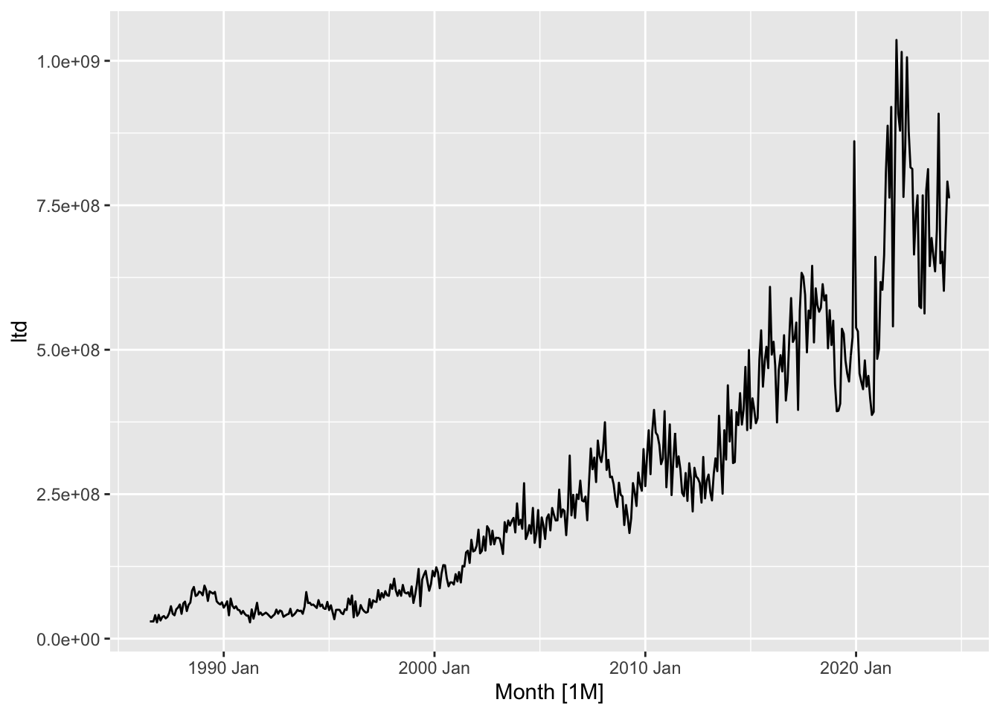
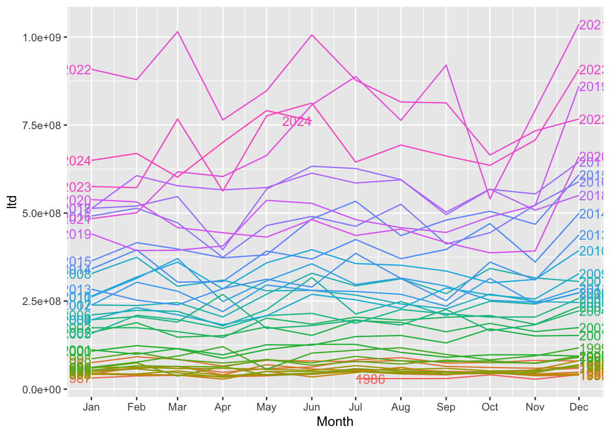
Figure 24 shows that all variables are positively correlated with each other, which is reasonable, ignoring ltd_unknown and volume_unknown.
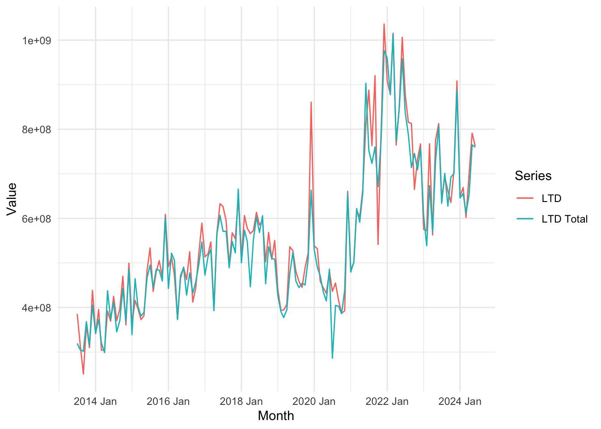

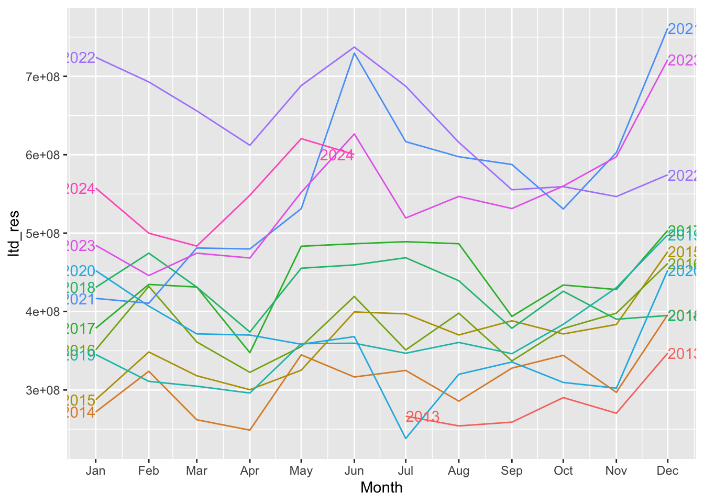
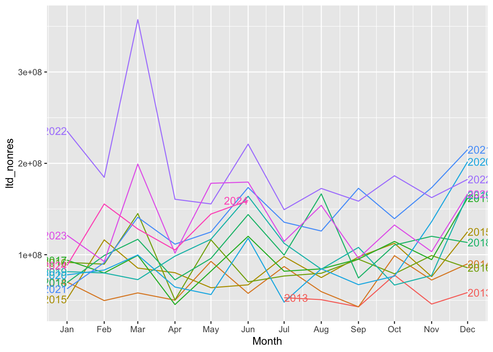
Drop in April
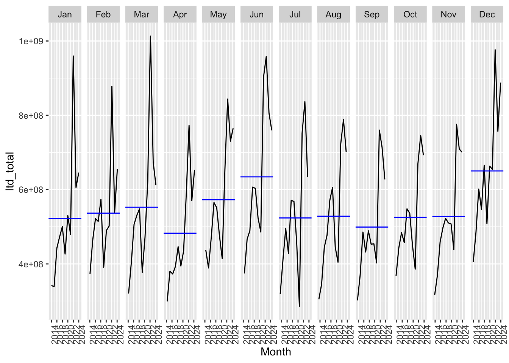
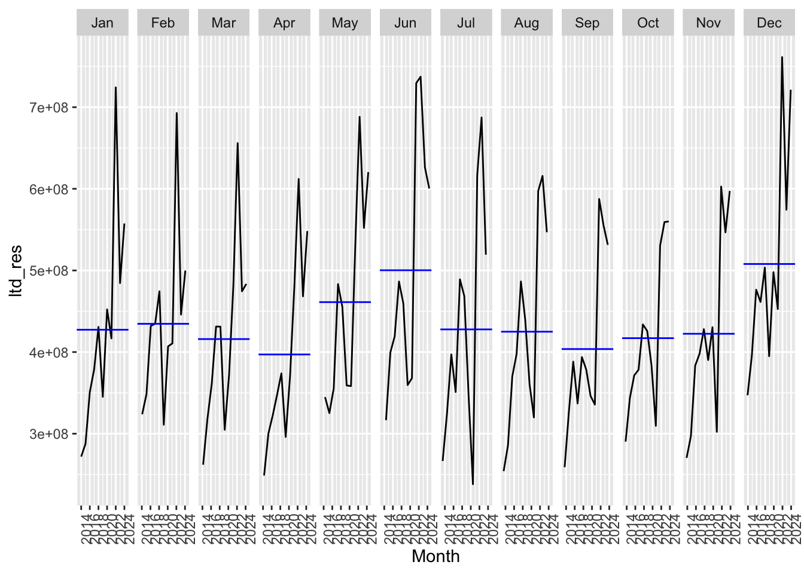
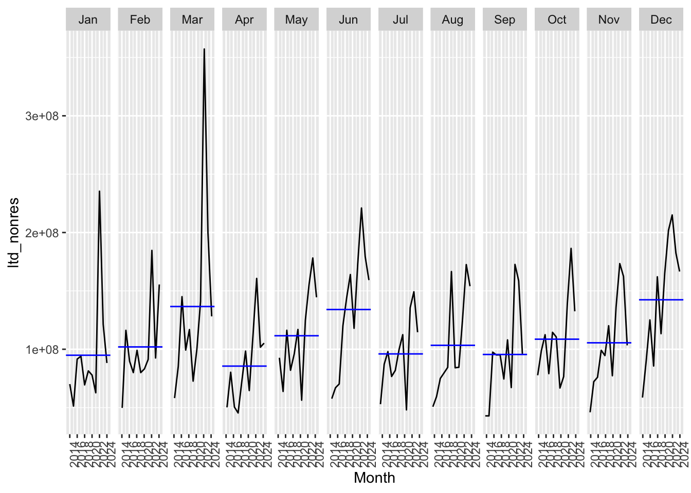
Drop in 2022
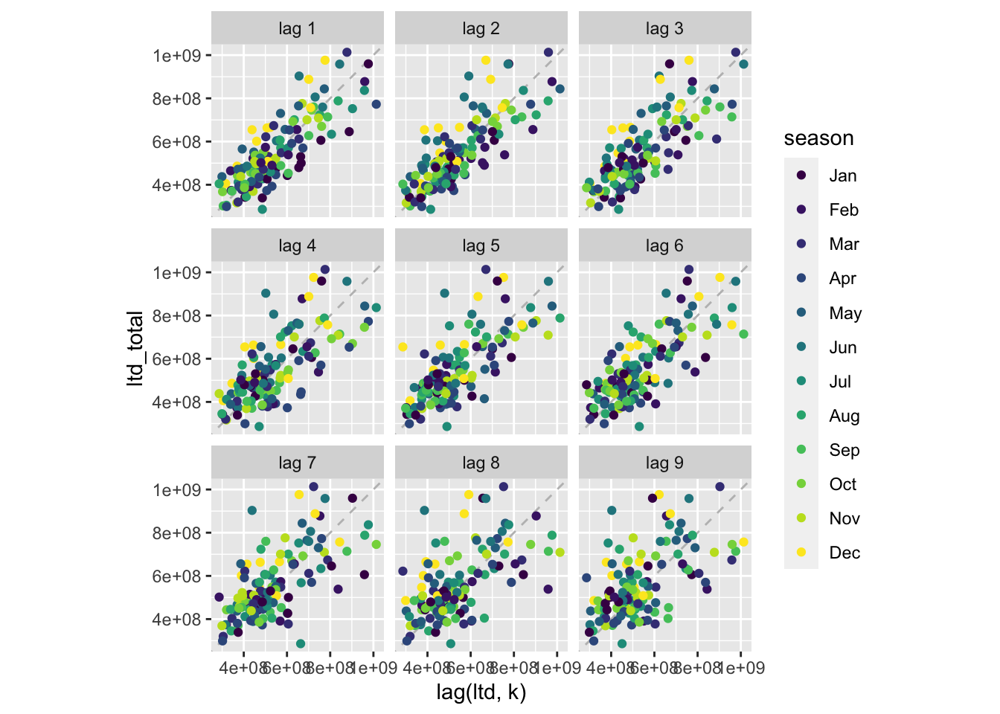
The relationship is strongly positive at March (lag3)
# A dable: 132 x 7 [1M]
# Key: .model [1]
# : ltd_total = trend + season_year + remainder
.model Month ltd_total trend season_year remainder season_adjust
<chr> <mth> <dbl> <dbl> <dbl> <dbl> <dbl>
1 stl 2013 Jul 319490654. 316381257. 4756792. -1647395. 314733862.
2 stl 2013 Aug 304910653. 322020988. -4291701. -12818634. 309202354.
3 stl 2013 Sep 301864862. 327660719. -30245689. 4449832. 332110551.
4 stl 2013 Oct 367969177. 333300450. 5898276. 28770451. 362070901.
5 stl 2013 Nov 316302613. 338894798. -12657492. -9934693. 328960105.
6 stl 2013 Dec 405630136. 344489146. 90312058. -29171068. 315318078.
7 stl 2014 Jan 342061060. 350083493. -30903106. 22880672. 372964165.
8 stl 2014 Feb 373577776. 355552941. 11472544. 6552291. 362105232.
9 stl 2014 Mar 320151633. 361022388. -7603218. -33267537. 327754851.
10 stl 2014 Apr 299004858. 366491835. -78829735. 11342758. 377834594.
# ℹ 122 more rows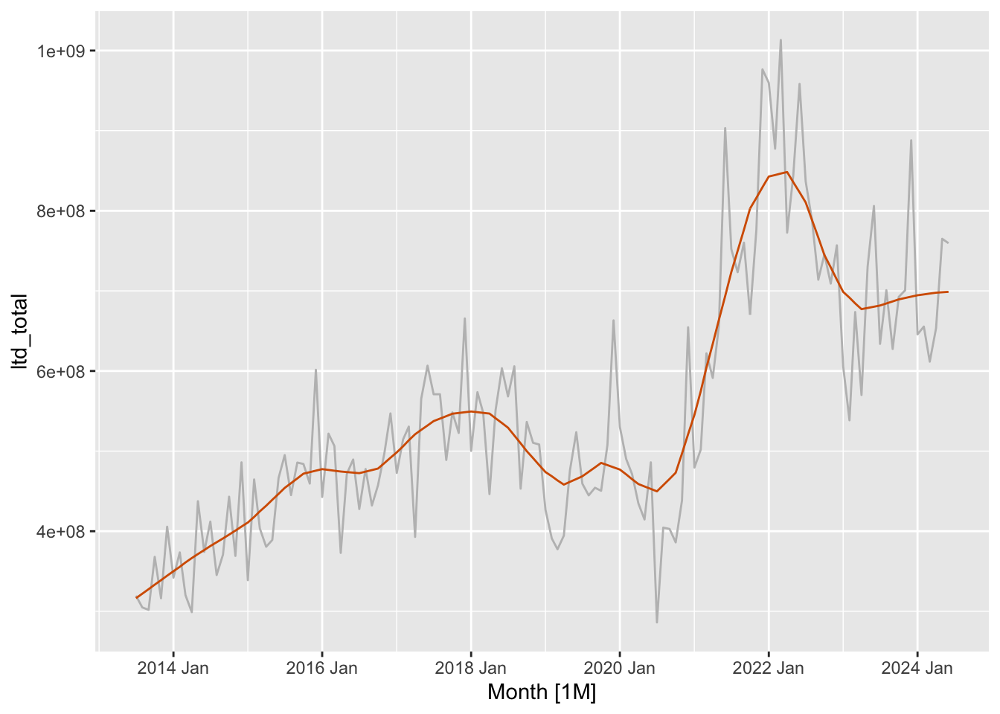
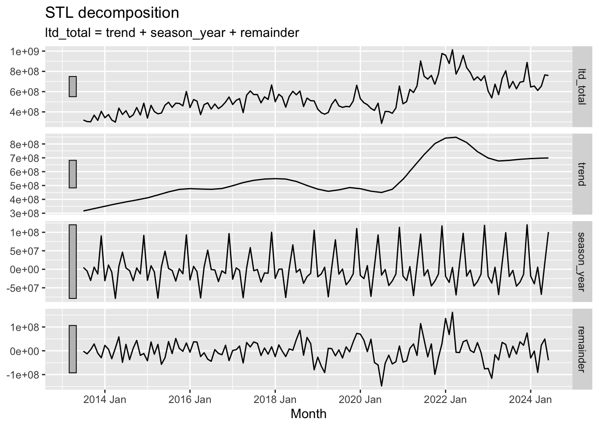
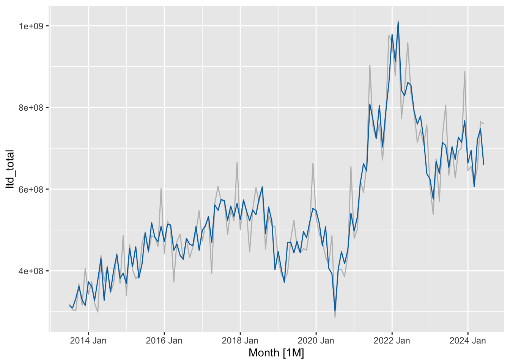
There is seasonal pattern for ltd_total but the large grey bar in the seasonal panel shows that the variation in the seasonal component is smallest compared to the variation in the data.
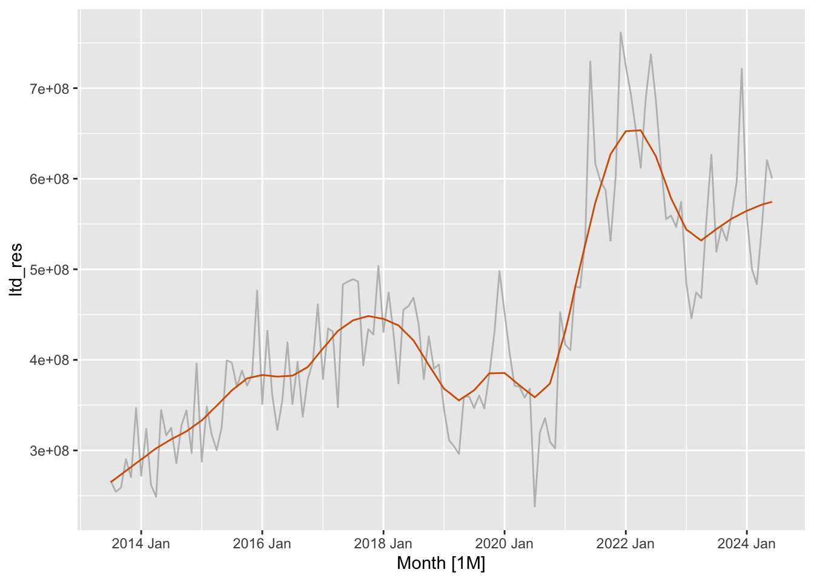
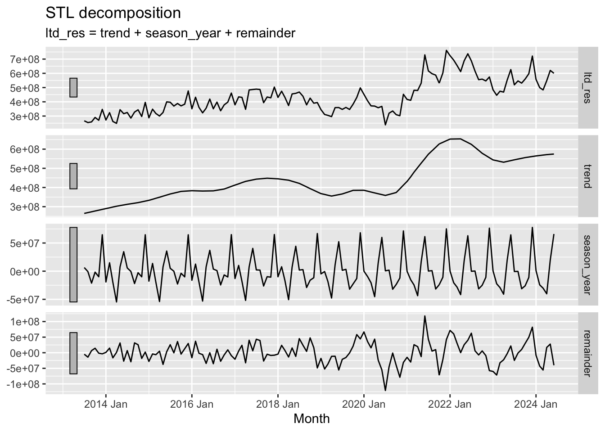